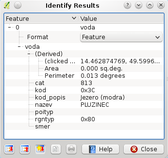
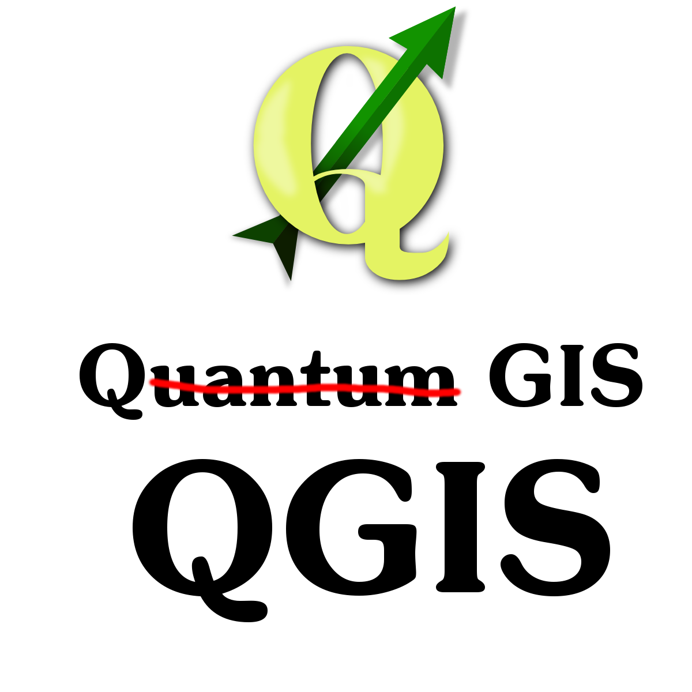
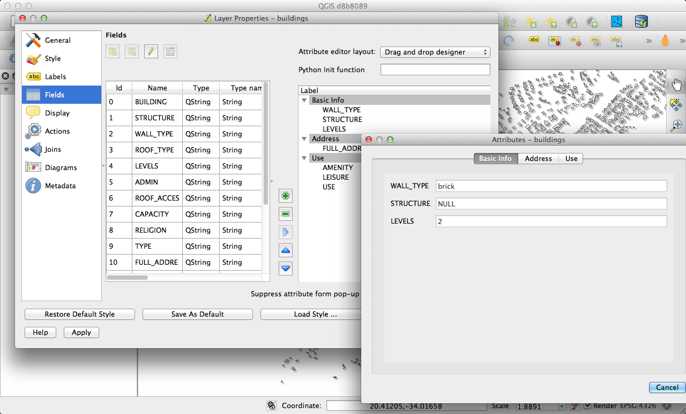
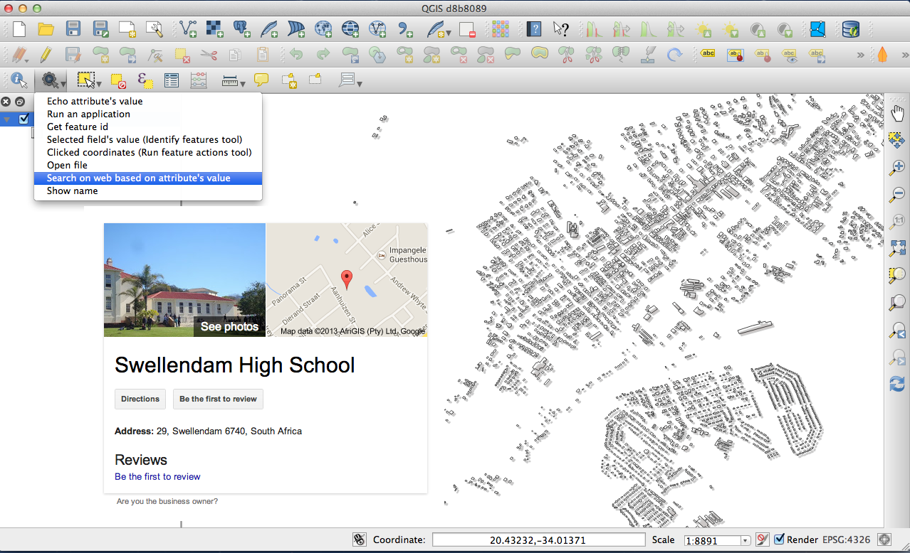

Changelog for QGIS 2.0¶
Analysis tools¶
Feature: Processing Commander¶
For quick access to geoprocessing functionality, just launch the processing commander (Ctrl + Alt + M) and start typing the name of the tool you are looking for. Commander will show you the available options and launch them for you. No more searching through menus to find tools. They are now right at your fingertips.

Feature: Heatmap Plugin Improvements¶
The heatmap plugin has seen numerous improvements and optimisations, resulting in much faster creation of heatmaps. Additionally, you now have the choice of which kernel function is used to create the heatmap.

Feature: Processing Support¶
The SEXTANTE project has been ported to and incorporated into QGIS as core functionality. SEXTANTE has been renamed to ‘Processing’ and introduces a new menu in QGIS from where you can access a rich toolbox of spatial analysis tools. The processing toolbox has incredibly rich functionality - with a python programming API allowing you to easily add new tools, and hooks to provide access to analysis capabilities of many popular open source tools such as GRASS, OTB, SAGA etc.

Feature: Processing Modeller¶
One of the great features of the new processing framework is the ability to combine the tools graphically. Using the Processing Modeller, you can build up complex analysis from a series of small single purpose modules. You can save these models and then use them as building blocks in even more complex models. Awesome power integrated right into QGIS and very easy to use!

Application and Project Options¶
Feature: Define default startup project and project templates¶
With QGIS 2.0 you can specify what QGIS should do when it starts:
New Project (legacy behaviour, starts with a blank project),
Most recent (when you start QGIS it will load the last project you
worked on), Specific (always load a specific project when QGIS
starts). You can use the project template directory to specify where
your template projects should be stored. Any project that you store in
that directory will be available for use as a template when invoking the
Project --> New from template menu.

Feature: System environment variables¶
Current system environment variables can now be viewed and many configured within the application Options dialog. Useful for platforms, such as Mac, where a GUI application does not necessarily inherit the user’s shell environment. Also useful for setting/viewing environment variables for the external tool sets controlled by the processing toolbox, e.g. SAGA, GRASS; and, for turning on debugging output for specific sections of the source code.

Feature: User-defined zoom scales¶
A listing of zoom scales can now be configured for the application and
optionally overridden per project. The list will show up in the
Scale popup combo box in the main window status bar, allowing for
quick access to known scales for efficiently viewing and working with
the current data sources. Defined scales can be exported to an XML file
that can be imported into other projects or another QGIS application.

Browser¶
Feature: Improvements to in-app browser panel¶
Directories can be filtered by wildcard or regex expressions
New
Project home(parent directory of current project)View
Propertiesof the selected directory in a dialogChoose which directories to
Fast scanChoose to
Add a directorydirectly toFavouritesvia filesystem browse dialogNew
/Volumeson Mac (hidden directory for access to external drives)New
OWSgroup (collation of available map server connections)Open a second browser (
View -> Panels -> Browser (2)) for drag-n-drop interactions between browser panelsIcons now sorted by item group type (filesystem, databases, map servers)
Layer
Propertiesnow have better visual layout

Data Providers¶
Feature: Raster Data Provider overhaul¶
The raster data provider system has been completely overhauled. One of the best new features stemming from this work is the ability to ‘Layer -> Save As…’ to save any raster layer as a new layer. In the process you can clip, resample, and reproject the layer to a new Coordinate Reference System. You can also save a raster layer as a rendered image so if you for example have single band raster that you have applied a colour palette to, you can save the rendered layer out to a georeferenced RGB layer.

Feature: Oracle Spatial support¶
QGIS 2.0 now includes Oracle Spatial support.

Feature: Web Coverage Service provider added¶
QGIS now provides native support for Web Coverage Service layers - the process for adding WCS is similar to adding a WMS layer or WFS layer.
Feature: Raster 2% cumulative cut by default¶
Many raster imagery products have a large number of outliers which result in images having a washed out appearance. QGIS 2.0 intoduces much more fine grained control over the rendering behaviour of rasters, including using a 2% - 98% percent cumulative cut by default when determining the colour space for the image. The image here shows QGIS 1.8 (left) versus QGIS 2.0 (right) when rendering the same image with default settings.

Feature: WMS identify format¶
It is now possible to select the format of the identify tool result for WMS layers if multiple known formats are supported by the server. The supported formats are HTML, feature (GML) and plain text. If the feature (GML) format is selected, the result is in the same form as for vector layers, the geometry may be highlighted and the feature including attributes and geometry may be copied to clipboard and pasted to another layer.

Feature: WMTS Support¶
The WMS client in QGIS now supports WMTS (Web Mapping Tile Service) including selection of sub-datasets such as time slices. When adding a WMS layer from a compliant server, you will be prompted to select the time slice to display.

General¶
Feature: Quantum GIS is now known only as ‘QGIS’¶
The ‘Quantum’ in ‘Quantum GIS’ never had any particular significance and
the duality of referring to our project as both Quantum GIS and
QGIS caused some confusion. We are streamlining our project and as
part of that process we are officially dropping the use of the word
Quantum - henceforth we will be known only as QGIS (spelled with
all letters in upper case). We will be updating all our code and
publicity material to reflect this.

Labelling¶
Feature: New labelling system¶
The labelling system has been totally overhauled - it now includes many new features such as drop shadows, ‘highway shields’, many more data bound options, and various performance enhancements. We are slowly doing away with the ‘old labels’ system, although you will still find that functionality available for this release, you should expect that it will disappear in a follow up release.

Feature: Expression based label properties¶
The full power of normal label and rule expressions can now be used for label properties. Nearly every property can be defined with an expression or field value giving you more control over the label result. Expressions can refer to a field (e.g. set the font size to the value of the field ‘font’) or can include more complex logic.
Examples of bindable properties include:
Font
Size
Style
Buffer size

Feature: Older labelling engine deprecated¶
Use of the older labelling engine available in QGIS <= 1.8 is now discouraged (i.e. deprecated), but has not been removed. This is to allow users to migrate existing projects from the old to new labelling engine.
The following guidelines for working with the older engine in QGIS 2.0 apply:
Deprecated labelling tab is removed from vector layer properties dialog for new projects or older opened projects that don’t use that labelling engine.
Deprecated tab remains active for older opened projects, if any layer uses them, and does not go away even if saving the project with no layers having the older labelling engine enabled.
Deprecated labelling tab can be enabled/disabled for the current project, via Python console commands, e.g.:
>>> QgsProject.instance().writeEntry('DeprecatedLabels', '/Enabled', True | False)
# or
>>> QgsProject.instance().removeEntry('DeprecatedLabels', '/')
NOTE: There is a very high likelihood the deprecated labelling engine will be completely removed prior to the next stable release of QGIS. Please migrate older projects.

Layer Legend¶
Feature: Legend visual feedback and options¶
Total count for features in layer, as well as per symbol
Vector layers in edit mode now have a red pencil to indicate uncommitted (unsaved) edits
Active layer is now underlined, to indicate it in multi-layer selections or when there is no selection
Clicking in non-list-item whitespace now clears the selection
Right-clicksare now treated asleft-clicksprior to showing the contextual menu, allowing for one click instead of twoGroups and layers can optionally be in a bold font style
Raster layer generated preview icons can now be turned off, for projects where such rendering may be slow

Feature: Duplicate existing map layer¶
Duplicate selected vector and raster layers in the map layer legend. Similar to importing the same data source again, as a separate layer, then copy/pasting style and symbology attributes.

Feature: Multi-layer toggle editing commands¶
User can now select multiple layers in legend and, if any of those are vector layers in edit mode, choose to save, rollback, or cancel current uncommitted edits. User can also choose to apply those actions across all layers, regardless of selection.

Map Composer¶
Feature: HTML Map Items¶
You can now place html elements onto your map.

Feature: Multipage support¶
A single composer window can now contain more then one page.

Feature: Expressions in composer labels¶
The composer label item in 1.8 was quite limited and only allowed a single token $CURRENT_DATE to be used. In 2.0 full expression support has been added too greater power and control of the final labels.
A label with an expression such as:
This was printed on: [% format_date( $now, 'dd.MM.yyyy')%]
will be evaluated at print time (and display time) to generate:
This was printed on: 06.09.2013
When atlas generation is enabled the currently active features’ attribute values will also be accessible in the expressions allowing such things as:
Asset ID [% "ID" %] and the Tree Type is [% "TreeType" %]

Feature: Auto snap lines¶
Having nicely align map items is critical to making nice printed maps. Auto snapping lines have been added to allow for easy composer object alignment by simply dragging an object close to another.

Feature: Manual Snap Lines¶
Sometimes you need to align objects a curtain distance on the composer. With the new manual snapping lines you are able to add manual snap lines which allow for better align objects using a common alignment. Simply drag from the top or side ruler to add new guide line.

Feature: Map series generation¶
Ever needed to generate a map series? Of course you have. The composer now includes built in map series generation using the atlas feature. Coverage layers can be points, lines, polygons, and the current feature attribute data is available in labels for on the fly value replacement.

Feature: Automatic overview support in map frame¶
Need to show the current area of the main map frame in a smaller overview window. Now you can. The map frame now contains the ability to show the extents of other and will update when moved. Using this with the atlas generation feature now core in the composer allows for some slick map generation. Overview frame style uses the same styling as a normal map polygon object so your creativity is never restricted.

Feature: Layer blending¶
Layer blending makes it possible to combine layers in new and exciting ways. While in older versions, all you could do was to make the layer transparent, you can now choose between much more advanced options such as “multiply”, “darken only”, and many more.
Blending can be used in the normal map view as well as in print composer. For a short tutorial on how to use blending in print composer to make the most out of background images, see “Vintage map design using QGIS”.

Feature: HTML Label support¶
HTML support has been added map composer label item to give you even more control over your final maps. HTML labels support full css styles sheets, html, and even javascript if you are that way inclined.

Feature: Multicolumn composer legend¶
The composer legend now supports multiple columns. Splitting of a single layer with many classes into multiple columns is optional. Single symbol layers are now added by default as single line item. Three different styles may be assigned to layer/group title: Group, Subgroup or Hidden. Title styles allow arbitrary visual grouping of items. For example, a single symbol layer may be displayed as single line item or with layer title (like in 1.8), symbols from multiple following layers may be grouped into a single group (hiding titles) etc. Feature counts may be added to labels.

Feature: Updates to map composer management¶
The following improvements have been made to map composer management:
Composer name can now be defined upon creation, optionally choosing to start from other composer names
Composers can now be duplicated
New from Templateand fromSpecific(in Composer Manager) creates a composer from a template located anywhere on the filesystemParent project can now be saved directly from the composer work space
All composer management actions now accessible directly from the composer work space

Plugins¶
Feature: Revamped plugin manager¶
In QGIS 1.x managing plugins was somewhat confusing with two interfaces - one for managing already installed plugins and one for fetching python plugins from an only plugin repository. In QGIS 2.0 we introduce a new, unified, plugin manager which provides a one stop shop for downloading, enabling/disabling and generally managing you plugins. Oh, and the user interface is gorgeous too with side tabs and easy to recognise icons!

Programmability¶
Feature: New Python Console¶
The new Python console gives you even more power. Now the with auto complete support, syntax highlighting, adjustable font settings. The side code editor allows for easier entry of larger blocks of code with the ability to open and run any Python file in the QGIS session.

Feature: Even more expression functions¶
With the expression engine being used more and more though out QGIS to allow for things like expression based labels and symbol, many more functions have been added to the expression builder and are all accessible though the expression builder. All functions include comprehensive help and usage guides for ease of use.

Feature: Custom expression functions¶
If the expression engine doesn’t have the function that you need. Not to worry. New functions can be added via a plugin using a simple Python API.

Feature: New cleaner Python API¶
The Python API has been revamped to allow for a more cleaner, more pythonic, programming experience. The QGIS 2.0 API uses SIP V2 which removes the messy toString(), toInt() logic that was needed when working with values. Types are now converted into native Python types making for a much nicer API. Attributes access is now done on the feature itself using a simple key lookup, no more index lookup and attribute maps.
>>> feature['mycolumn'] = 10
>>> feature['mycolumn']
10
The way features are read from a layer has also been improved allowing for multithreading in the future versions.
for feature in layer.getFeatures():
print feature['mycolumn']

Feature: Code compatibility with version 1.x releases¶
As this is a major release, it is not completely API compatible with previous 1.x releases. In most cases porting your code should be fairly straightforward - you can use this guide to get started. Please use the developer mailing list if you need further help.

Feature: Python project macros¶
A Python module, saved into a project.qgs file, can be loaded and have specific functions run on the following project events:
openProject()saveProject()closeProject()
Whether the macros are run can be configured in the application options.

Symbology¶
Feature: Data defined properties¶
With the new data defined properties, it is possible to control symbol type, size, color, rotation, and many other properties through feature attributes.

Feature: Improved symbol layer management¶
The new symbol layer overview uses a clear, tree-structured layout which allows for easy and fast access to all symbol layers.

Feature: Support for transparency in colour definitions¶
In most places where you select colours, QGIS now allows you to specify the alpha channel (which determins how transparent the colour should be). This allows you to create great looking maps and to hide data easily that you don’t want users to see.

Feature: Color Control for Raster Layers¶
QGIS 2.0 allows you to precisely control exactly how you’d like raster layers to appear. You now have complete control over the brightness, contrast and saturation of raster layers. There’s even options to allow display of rasters in grayscale or by colorising with a specified color.

Feature: Copy symbology between layers¶
Its now super easy to copy symbology from one layer to another layer. If
you are working with several similar layer, you can simply
right-click on one layer, choose Copy Style from the context
menu and then right-click on another layer and choose
Paste-Style.

Feature: Save styles in your database¶
If you are using a database vector data store, you can now store the layer style definitions directly in the database. This makes it easy to share styled layers in an enterprise or multi-user environment.

Feature: Colour ramp support¶
Colour ramps are now available in many places in QGIS symbology settings and QGIS ships with a rich, extensible set of colour ramps. You can also design your own and many cpt-city themes are included in QGIS now ‘out of the box’. Color ramps even have full support for transparency!

Feature: Set custom default styles for all layer types¶
Now QGIS lets you control how new layers will be drawn when they do not
have an existing .qml style defined. You can also set the default
transparency level for new layers and whether symbols should have random
colours assigned to them.

User Interface¶
Feature: New icon theme¶
We have updated out icon theme to use the ‘GIS’ theme which introduces an improved level of consistency and professionalism to the QGIS user interface.

Feature: Side tabs, collapsable groups¶
We have standardised the layout of tabs and introduced collapsible group boxes into many of our dialogs to make navigating the various options more easy, and to make better use of screen real estate.

Feature: Soft notifications¶
In many cases we want to tell you something, but we don’t want to stop your work or get in your way. With the new notification system QGIS can let you know about important information via a yellow message bar that appears at the top of the map canvas but doesn’t force you to deal with it if you are busy doing something else. Programmers can create these notification (e.g. from a plugin) too using our python API.

Feature: Application custom font and Qt stylesheet¶
The system font used for the application’s user interface can now be
set. Any C++ or Python plugin that is a child of the QGIS GUI
application or has copied/applied the application’s GUI stylesheet can
inherit its styling, which is useful for GUI fixes across platforms and
when using custom QGIS Qt widgets, like QgsCollapsibleGroupBox.
The generated QGIS GUI application stylesheet for the current platform can be accessed after launching with (in PyQGIS):
qgis.utils.iface.mainWindow().styleSheet()

Feature: Live color chooser dialogs and buttons¶
Every color chooser button throughout the interface has been updated to
give visual feedback on whether the current color has a transparent, or
‘alpha,’ component. The color chooser opened by the new color buttons
will now always be the default for the operating system. If the user has
Use live-updating color chooser dialogs checked under
Options -> General -> Application, any change in the color chooser
will immediately be shown in the color button and for any item currently
being edited, where applicable.

Feature: SVG Annotations¶
With QGIS 2.0 you can now add SVG annotations to your map - either pinned to a specific place or in a relative position over the map canvas.

Feature: Drag and drop form builder¶
QGIS 2.0 supports a great new system for creating data entry forms. With the drag and drop form designer you can create smart looking forms with tabs to group common fields together. Now it is much easier to control the data entry experience for your users.

Feature: Default action tool¶
If you are a user of vector layer actions (small tasks that can run when you click on a feature), you will love the new action tool on the toolbar. With it you can select an active action and then click on your features to invoke that action.
